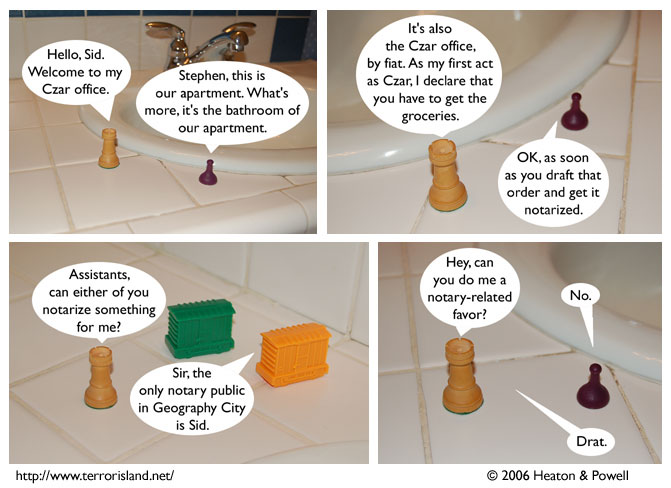

Strip #51
— Monday, October 9, 2006
Stephen’s assistants are named Gibbs and Lockley. He calls them by the name Assistants out of kindness.
Notes, Thoughts, &c.
Ben’s Notes
If Sid and Stephen’s bathroom looks familiar to you, it’s probably because this set was also used for the memorable “Zeke’s lab” sequence in FOMS, my first photocomic. Or it might look familiar because you’ve actually been in my bathroom in real life. That category’s probably larger.
Lewis’s Notes
All of you should read Gottlob Frege’s writings. Most of you probably won’t care about them, but that is more of a defect in you than in the writings.